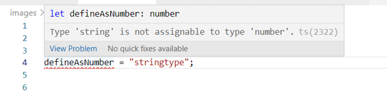

Typescript Quickstart Tutorial
Typescript can assign a type to a variable in two different ways.
One way is by inference.
Another way is by definition.
After the definition, if a variable is used as a different
type, the Typescript compiler will warn you.

You can also define your own type using a similar syntax with
interfaces and classes.
Again, inconsistent use in subsequent
code will cause Typescript to issue warnings on proper usage.
Typescript supports functionality to adjust the strictness of the
compiler. These additional settings will cause warnings if code
falls into certain common programming mistakes.